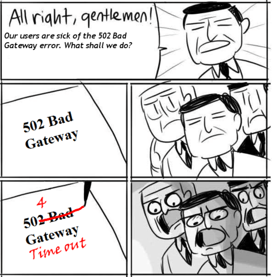

<!DOCTYPE html>
<html>
<head>
  <meta charset="utf-8">
  <meta name="baidu-site-verification" content="1ZsVVOmjoT">
  
  <title>nginx负载均衡参数配置 | geosmart</title>
  <meta name="viewport" content="width=device-width,initial-scale=1,maximum-scale=1">
  <meta name="description" content="&amp;#x95EE;&amp;#x9898;&amp;#x63CF;&amp;#x8FF0;
Nginx&amp;#x670D;&amp;#x52A1;&amp;#x5668;&amp;#x8FD4;&amp;#x56DE;&amp;#x5927;&amp;#x91CF;502Bad Gateway&amp;#x548C;504 Time-Out&amp;#xFF0C;&amp;#x4EE3;&amp;#x7406;&amp;#x670D;&amp;#x52A1;&amp;#x5668;Jetty&amp;#x7AEF;&amp;#x5B58;&amp;#x">
<meta property="og:type" content="article">
<meta property="og:title" content="nginx负载均衡参数配置">
<meta property="og:url" content="http://geosmart.github.io/2015/07/12/nginx负载均衡参数配置/index.html">
<meta property="og:site_name" content="geosmart">
<meta property="og:description" content="&amp;#x95EE;&amp;#x9898;&amp;#x63CF;&amp;#x8FF0;
Nginx&amp;#x670D;&amp;#x52A1;&amp;#x5668;&amp;#x8FD4;&amp;#x56DE;&amp;#x5927;&amp;#x91CF;502Bad Gateway&amp;#x548C;504 Time-Out&amp;#xFF0C;&amp;#x4EE3;&amp;#x7406;&amp;#x670D;&amp;#x52A1;&amp;#x5668;Jetty&amp;#x7AEF;&amp;#x5B58;&amp;#x">
<meta property="og:image" content="http://geosmart.github.io/502-504.png">
<meta property="og:image" content="http://geosmart.github.io/proxy.png">
<meta property="og:updated_time" content="2015-08-08T01:26:32.927Z">
<meta name="twitter:card" content="summary">
<meta name="twitter:title" content="nginx负载均衡参数配置">
<meta name="twitter:description" content="&amp;#x95EE;&amp;#x9898;&amp;#x63CF;&amp;#x8FF0;
Nginx&amp;#x670D;&amp;#x52A1;&amp;#x5668;&amp;#x8FD4;&amp;#x56DE;&amp;#x5927;&amp;#x91CF;502Bad Gateway&amp;#x548C;504 Time-Out&amp;#xFF0C;&amp;#x4EE3;&amp;#x7406;&amp;#x670D;&amp;#x52A1;&amp;#x5668;Jetty&amp;#x7AEF;&amp;#x5B58;&amp;#x">
  
  
    <link rel="icon" href="/favicon.png">
  

  <link rel="stylesheet" href="/css/style.css" type="text/css">
  
    <link rel="stylesheet" href="/fancybox/jquery.fancybox.css" type="text/css">
  
  
    <link rel="stylesheet" href="/scrollLoading/style.css" type="text/css">
  
   <!-- geosmart -->
  <!-- Baidu Analytics -->
<script type="text/javascript">
    var _hmt = _hmt || [];
    (function () {
        var hm = document.createElement("script");
        hm.src = "//hm.baidu.com/hm.js?221699150bf25edfe6338d0a9f205159";
        var s = document.getElementsByTagName("script")[0];
        s.parentNode.insertBefore(hm, s);
    })();
</script>
<!-- End Baidu Analytics -->
   <!-- geosmart -->

  

  
    <style type="text/css">
      .logo { background-image:url(http://geosmart.github.io/css/images/logo.png); }
    </style>
  

  
    <link href="//fonts.useso.com/css?family=Titillium+Web:300,400,600" rel="stylesheet" type="text/css">
    <link href="//fonts.useso.com/css?family=Source+Code+Pro" rel="stylesheet" type="text/css">
  

</head></html>
<body>
  <div id="wrap">
    <header id="header">
  <div id="header-outer" class="outer">
    <div class="container">
      <div class="container-inner">
        <div id="header-title">
          <h1 class="logo-wrap">
            <a href="/" class="logo"></a>
          </h1>
          
            <h2 class="subtitle-wrap">
              <p class="subtitle">生命不止 奋斗不息</p>
            </h2>
          
        </div>
        <div id="header-inner" class="nav-container">
          <a id="main-nav-toggle" class="nav-icon"></a>
          <div class="nav-container-inner">
            <ul id="main-nav">
              
                <li class="main-nav-list-item"><a class="main-nav-list-link" href="/">Home</a></li>
              
                    <ul class="main-nav-list"><li class="main-nav-list-item"><a class="main-nav-list-link" href="/categories/大数据/">大数据</a></li><li class="main-nav-list-item"><a class="main-nav-list-link" href="/categories/技术点滴/">技术点滴</a></li><li class="main-nav-list-item"><a class="main-nav-list-link" href="/categories/运维/">运维</a></li></ul>
                  
                <li class="main-nav-list-item"><a class="main-nav-list-link" href="/about/index.html">About</a></li>
              
            </ul>
            <nav id="sub-nav">
              <div id="search-form-wrap">
                <form action="//google.com/search" method="get" accept-charset="UTF-8" class="search-form"><input type="search" name="q" results="0" class="search-form-input" placeholder="搜索"><input type="hidden" name="sitesearch" value="http://geosmart.github.io"></form>
              </div>
            </nav>
          </div>
        </div>
      </div>
    </div>
  </div>
</header>
    <div class="container">
      <div class="main-body container-inner">
        <div class="main-body-inner">
          <section id="main">
            <div class="main-body-header">

              <h1 class="header"><a class="page-title-link" href="/categories/技术点滴/">技术点滴</a></h1>
            </div>
            <div class="main-body-content">
              <article id="post-nginx负载均衡参数配置" class="article article-single article-type-post" itemscope itemprop="blogPost">
    <div class="article-inner">
      <!--  -->
      
        <header class="article-header">
          <h1 class="article-title" itemprop="name">
      nginx负载均衡参数配置
    </h1>
        </header>
        
      <p class="article-byline">
        <a href="/2015/07/12/nginx负载均衡参数配置/" class="article-date">
  <time datetime="2015-07-12T13:30:47.000Z" itemprop="datePublished">12   七月   2015</time>
</a>
      </p> 

      <!--geosmart 待优化toc样式-->
      <article class="article article-summary">
           <ol class="toc"><li class="toc-item toc-level-1"><a class="toc-link" href="#问题描述"><span class="toc-number">1.</span> <span class="toc-text">问题描述</span></a></li><li class="toc-item toc-level-1"><a class="toc-link" href="#解决方案"><span class="toc-number">2.</span> <span class="toc-text">解决方案</span></a></li><li class="toc-item toc-level-1"><a class="toc-link" href="#nginx-upstream负载均衡反向代理"><span class="toc-number">3.</span> <span class="toc-text">Nginx upstream负载均衡/反向代理</span></a><ol class="toc-child"><li class="toc-item toc-level-2"><a class="toc-link" href="#upstream算法分析"><span class="toc-number">3.1.</span> <span class="toc-text">upstream算法分析</span></a></li><li class="toc-item toc-level-2"><a class="toc-link" href="#upstream参数介绍"><span class="toc-number">3.2.</span> <span class="toc-text">upstream参数介绍</span></a></li></ol></li><li class="toc-item toc-level-1"><a class="toc-link" href="#netstat参数状态"><span class="toc-number">4.</span> <span class="toc-text">netstat参数状态</span></a></li><li class="toc-item toc-level-1"><a class="toc-link" href="#服务器tcp连接状态"><span class="toc-number">5.</span> <span class="toc-text">服务器TCP连接状态</span></a></li></ol> 
      </article>
      <!--geosmart 待优化toc样式-->

      <div class="article-entry" itemprop="articleBody"> 
        <h1 id="&#x95EE;&#x9898;&#x63CF;&#x8FF0;">&#x95EE;&#x9898;&#x63CF;&#x8FF0;</h1>
<p>Nginx&#x670D;&#x52A1;&#x5668;&#x8FD4;&#x56DE;&#x5927;&#x91CF;502Bad Gateway&#x548C;504 Time-Out&#xFF0C;&#x4EE3;&#x7406;&#x670D;&#x52A1;&#x5668;Jetty&#x7AEF;&#x5B58;&#x5728;&#x5927;&#x91CF;CLOSE_WAIT&#x548C;TIME_WAIT&#x72B6;&#x6001;&#x7684;&#x8FDE;&#x63A5;

&#x9519;&#x8BEF;&#x4FE1;&#x606F;&#x67E5;&#x770B;&#x53E3;&#x4EE4;&#xFF1A;
<code>netstat -n | awk &apos;/^tcp/ {++S[$NF]} END {for(a in S) print a, S[a]}&apos;</code></p>
<h1 id="&#x89E3;&#x51B3;&#x65B9;&#x6848;">&#x89E3;&#x51B3;&#x65B9;&#x6848;</h1>
<ol>
<li>Linux&#x4E2D;TCP/IP&#x5185;&#x6838;&#x53C2;&#x6570; &#x4F18;&#x5316;
&#x7F16;&#x8F91;&#x53C2;&#x6570;&#xFF1A;<code>vi /etc/sysctl.conf</code>
<figure class="highlight stylus"><table><tr><td class="gutter"><pre><span class="line">1</span><br><span class="line">2</span><br><span class="line">3</span><br><span class="line">4</span><br><span class="line">5</span><br><span class="line">6</span><br><span class="line">7</span><br><span class="line">8</span><br><span class="line">9</span><br><span class="line">10</span><br><span class="line">11</span><br><span class="line">12</span><br><span class="line">13</span><br></pre></td><td class="code"><pre><span class="line">net<span class="class">.core</span><span class="class">.somaxconn</span> = <span class="number">4096</span></span><br><span class="line">net<span class="class">.ipv4</span><span class="class">.tcp_max_syn_backlog</span> = <span class="number">8192</span></span><br><span class="line">net<span class="class">.ipv4</span><span class="class">.tcp_syn_retries</span>= <span class="number">5</span></span><br><span class="line">net<span class="class">.ipv4</span><span class="class">.tcp_synack_retries</span> = <span class="number">5</span></span><br><span class="line">net<span class="class">.ipv4</span><span class="class">.tcp_abort_on_overflow</span>=<span class="number">0</span></span><br><span class="line">net<span class="class">.ipv4</span><span class="class">.tcp_tw_reuse</span>=<span class="number">1</span></span><br><span class="line">net<span class="class">.ipv4</span><span class="class">.tcp_tw_recycle</span>=<span class="number">1</span> </span><br><span class="line">net<span class="class">.ipv4</span><span class="class">.tcp_timestamps</span>=<span class="number">1</span></span><br><span class="line">net<span class="class">.ipv4</span><span class="class">.tcp_syncookies</span>=<span class="number">1</span></span><br><span class="line">net<span class="class">.ipv4</span><span class="class">.tcp_max_tw_buckets</span>=<span class="number">90000</span></span><br><span class="line">net<span class="class">.ipv4</span><span class="class">.tcp_fin_timeout</span>=<span class="number">30</span></span><br><span class="line">net<span class="class">.ipv4</span><span class="class">.ip_local_port_range</span>=<span class="number">10000</span> <span class="number">65000</span></span><br><span class="line">net<span class="class">.ipv4</span><span class="class">.tcp_keepalive_time</span>=<span class="number">1200</span></span><br></pre></td></tr></table></figure></li>
</ol>
<p>&#x8BA9;&#x53C2;&#x6570;&#x751F;&#x6548;&#xFF1A;<code>/sbin/sysctl -p</code></p>
<ol start="2">
<li>Nginx&#x914D;&#x7F6E;&#x53C2;&#x6570;
&#x4E3B;&#x8981;&#x914D;&#x7F6E;&#x4E09;&#x4E2A;proxy_&#x8D85;&#x65F6;&#x63A7;&#x5236;&#x53C2;&#x6570;
<figure class="highlight nginx"><table><tr><td class="gutter"><pre><span class="line">1</span><br><span class="line">2</span><br><span class="line">3</span><br><span class="line">4</span><br><span class="line">5</span><br><span class="line">6</span><br><span class="line">7</span><br><span class="line">8</span><br><span class="line">9</span><br><span class="line">10</span><br><span class="line">11</span><br><span class="line">12</span><br><span class="line">13</span><br><span class="line">14</span><br><span class="line">15</span><br><span class="line">16</span><br><span class="line">17</span><br><span class="line">18</span><br><span class="line">19</span><br></pre></td><td class="code"><pre><span class="line"><span class="title">upstream</span> uadb_server{   </span><br><span class="line">     <span class="title">server</span> <span class="number">192.168.1.81:8080</span>  weight=<span class="number">1</span> max_fails=<span class="number">2</span> fail_timeout=<span class="number">0</span>; </span><br><span class="line">     <span class="title">server</span> <span class="number">192.168.1.82:8080</span>  weight=<span class="number">1</span> max_fails=<span class="number">2</span> fail_timeout=<span class="number">0</span>;    </span><br><span class="line">} </span><br><span class="line"><span class="title">server</span> {</span><br><span class="line">        <span class="title">listen</span>       <span class="number">9090</span>;</span><br><span class="line">        <span class="title">server_name</span>  uadb_server;   </span><br><span class="line">        <span class="title">access_log</span>  /var/log/nginx/uadb_server-access-ssl.log;</span><br><span class="line">        <span class="title">error_log</span>  /var/log/nginx/uadb_server-<span class="built_in">error</span>-ssl.log;</span><br><span class="line">        <span class="title">location</span> /{ </span><br><span class="line">           <span class="title">proxy_pass</span> <span class="url">http://uadb_server</span>; </span><br><span class="line">           <span class="comment"># time out settings</span></span><br><span class="line">           <span class="title">proxy_connect_timeout</span> <span class="number">60</span>;</span><br><span class="line">           <span class="title">proxy_read_timeout</span>  <span class="number">3600</span>;</span><br><span class="line">           <span class="title">proxy_send_timeout</span>  <span class="number">3600</span>;</span><br><span class="line">           <span class="title">proxy_temp_file_write_size</span> <span class="number">64k</span>;</span><br><span class="line">           <span class="title">proxy_redirect</span>          <span class="built_in">off</span>; </span><br><span class="line">        } </span><br><span class="line">}</span><br></pre></td></tr></table></figure></li>
</ol>
<h1 id="nginx-upstream&#x8D1F;&#x8F7D;&#x5747;&#x8861;&#x53CD;&#x5411;&#x4EE3;&#x7406;">Nginx upstream&#x8D1F;&#x8F7D;&#x5747;&#x8861;/&#x53CD;&#x5411;&#x4EE3;&#x7406;</h1>
<p></p>
<h2 id="upstream&#x7B97;&#x6CD5;&#x5206;&#x6790;">upstream&#x7B97;&#x6CD5;&#x5206;&#x6790;</h2>
<ol>
<li>&#x8F6E;&#x8BE2;&#x6BCF;&#x4E2A;&#x8BF7;&#x6C42;&#x6309;&#x65F6;&#x95F4;&#x987A;&#x5E8F;&#x5206;&#x914D;&#x5230;&#x4E0D;&#x540C;&#x7684;&#x540E;&#x7AEF;&#x670D;&#x52A1;&#x5668;&#x4E86;&#xFF0C;&#x540E;&#x7AEF;&#x670D;&#x52A1;&#x5668;down&#x6389;&#xFF0C;&#x81EA;&#x52A8;&#x5207;&#x9664;&#xFF1B;</li>
<li>weight&#xFF1A;&#x8BBE;&#x5B9A;&#x670D;&#x52A1;&#x5668;&#x6743;&#x503C;&#xFF1A;&#x5982;weight=2&#xFF0C;&#x670D;&#x52A1;&#x5668;&#x6027;&#x80FD;&#x4E0D;&#x5747;&#x65F6;&#x5019;&#x4F7F;&#x7528;&#x3002;weight&#xFF1A;&#x9ED8;&#x8BA4;&#x4E3A;1&#xFF0C;weight&#x8D8A;&#x5927;&#xFF0C;&#x8D1F;&#x8F7D;&#x7684;&#x6743;&#x91CD;&#x8D8A;&#x5927;&#xFF1B;</li>
<li>ip_hash &#xFF1A;&#x6BCF;&#x4E2A;&#x8BF7;&#x6C42;&#x6309;&#x8BBF;&#x95EE;ip&#x7684;hash&#x7ED3;&#x679C;&#x5206;&#x914D;&#xFF0C;&#x6BCF;&#x4E2A;&#x8BBF;&#x5BA2;&#x6709;&#x56FA;&#x5B9A;&#x7684;&#x540E;&#x7AEF;&#x670D;&#x52A1;&#x5668;&#xFF0C;&#x53EF;&#x4EE5;&#x89E3;&#x51B3;session&#x95EE;&#x9898;&#xFF1B;</li>
<li>fair&#xFF08;&#x7B2C;&#x4E09;&#x65B9;&#xFF09;&#xFF1A;&#x6309;&#x540E;&#x7AEF;&#x670D;&#x52A1;&#x5668;&#x7684;&#x54CD;&#x5E94;&#x65F6;&#x95F4;&#x6765;&#x5206;&#x914D;&#xFF0C;&#x54CD;&#x5E94;&#x65F6;&#x95F4;&#x77ED;&#x7684;&#x4F18;&#x5148;&#x5206;&#x914D;</li>
<li>url_hash (&#x7B2C;&#x4E09;&#x65B9;)&#xFF1A; &#x6309;&#x8BBF;&#x95EE;&#x7684;url&#x7684;hash&#x7ED3;&#x679C;&#x5206;&#x914D;&#xFF0C;&#x4F7F;&#x6BCF;&#x4E2A;url&#x5B9A;&#x5411;&#x5230;&#x540C;&#x4E00;&#x4E2A;&#x540E;&#x7AEF;&#x670D;&#x52A1;&#x5668;&#xFF0C;&#x540E;&#x7AEF;&#x4E3A;&#x7F13;&#x5B58;&#x670D;&#x52A1;&#x5668;&#x6BD4;&#x8F83;&#x6709;&#x6548;&#x3002;</li>
</ol>
<h2 id="upstream&#x53C2;&#x6570;&#x4ECB;&#x7ECD;">upstream&#x53C2;&#x6570;&#x4ECB;&#x7ECD;</h2>
<ol>
<li>down&#xFF1A;&#x5F53;&#x524D;&#x7684;IP server&#x6682;&#x65F6;&#x4E0D;&#x53C2;&#x4E0E;&#x8D1F;&#x8F7D;&#xFF0C;&#x4E0D;&#x8FDB;&#x884C;&#x53CD;&#x5411;&#x4EE3;&#x7406;&#xFF1B;</li>
<li>max_fails&#xFF1A;&#x5141;&#x8BB8;&#x8BF7;&#x6C42;&#x5931;&#x8D25;&#x7684;&#x6B21;&#x6570;&#x9ED8;&#x8BA4;&#x4E3A;1&#xFF0C;&#x5F53;&#x8D85;&#x8FC7;&#x6700;&#x5927;&#x6B21;&#x6570;&#x65F6;&#xFF0C;&#x8FD4;&#x56DE;proxy_next_upstream&#x6A21;&#x5757;&#x5B9A;&#x4E49;&#x7684;&#x9519;&#x8BEF;&#xFF1B;</li>
<li>fail_timeout&#xFF1A;max_fails&#x6B21;&#x5931;&#x8D25;&#x540E;&#xFF0C;&#x6682;&#x505C;&#x7684;&#x65F6;&#x95F4;&#xFF1B;</li>
<li>backup&#xFF1A;&#x5176;&#x5B83;&#x6240;&#x6709;&#x975E;backup&#x673A;&#x5668;down&#x6216;&#x8005;&#x5FD9;&#x65F6;&#x5019;&#xFF0C;&#x8BF7;&#x6C42;backup&#x673A;&#x5668;&#xFF0C;&#x8FD9;&#x53F0;&#x673A;&#x5668;&#x538B;&#x529B;&#x6700;&#x8F7B;&#x3002;</li>
</ol>
<h1 id="netstat&#x53C2;&#x6570;&#x72B6;&#x6001;">netstat&#x53C2;&#x6570;&#x72B6;&#x6001;</h1>
<p>&#x67E5;&#x770B;&#x53E3;&#x4EE4;&#xFF1A;<code>netstat -an</code>
&#x53C2;&#x6570;&#x8BF4;&#x660E;&#xFF1A;
<figure class="highlight inform7"><table><tr><td class="gutter"><pre><span class="line">1</span><br><span class="line">2</span><br><span class="line">3</span><br><span class="line">4</span><br><span class="line">5</span><br><span class="line">6</span><br><span class="line">7</span><br><span class="line">8</span><br><span class="line">9</span><br><span class="line">10</span><br><span class="line">11</span><br></pre></td><td class="code"><pre><span class="line">LISTEN&#xFF1A;&#x4FA6;&#x542C;&#x6765;&#x81EA;&#x8FDC;&#x65B9;&#x7684;TCP&#x7AEF;&#x53E3;&#x7684;&#x8FDE;&#x63A5;&#x8BF7;&#x6C42;&#xFF1B;</span><br><span class="line">SYN-SENT&#xFF1A;&#x5728;&#x53D1;&#x9001;&#x8FDE;&#x63A5;&#x8BF7;&#x6C42;&#x540E;&#x7B49;&#x5F85;&#x5339;&#x914D;&#x7684;&#x8FDE;&#x63A5;&#x8BF7;&#x6C42;&#xFF1B;</span><br><span class="line">SYN-RECEIVED&#xFF1A;&#x5728;&#x6536;&#x5230;&#x548C;&#x53D1;&#x9001;&#x4E00;&#x4E2A;&#x8FDE;&#x63A5;&#x8BF7;&#x6C42;&#x540E;&#x7B49;&#x5F85;&#x5BF9;&#x65B9;&#x5BF9;&#x8FDE;&#x63A5;&#x8BF7;&#x6C42;&#x7684;&#x786E;&#x8BA4;&#xFF1B;</span><br><span class="line">ESTABLISHED&#xFF1A;&#x4EE3;&#x8868;&#x4E00;&#x4E2A;&#x6253;&#x5F00;&#x7684;&#x8FDE;&#x63A5;&#xFF0C;&#x6211;&#x4EEC;&#x5E38;&#x7528;&#x6B64;&#x4F5C;&#x4E3A;&#x5E76;&#x53D1;&#x8FDE;&#x63A5;&#x6570;&#xFF1B;</span><br><span class="line">FIN-WAIT-1&#xFF1A;&#x7B49;&#x5F85;&#x8FDC;&#x7A0B;TCP&#x8FDE;&#x63A5;&#x4E2D;&#x65AD;&#x8BF7;&#x6C42;&#xFF0C;&#x6216;&#x5148;&#x524D;&#x7684;&#x8FDE;&#x63A5;&#x4E2D;&#x65AD;&#x8BF7;&#x6C42;&#x7684;&#x786E;&#x8BA4;&#xFF1B;</span><br><span class="line">FIN-WAIT-2&#xFF1A;&#x4ECE;&#x8FDC;&#x7A0B;TCP&#x7B49;&#x5F85;&#x8FDE;&#x63A5;&#x4E2D;&#x65AD;&#x8BF7;&#x6C42;&#xFF1B;</span><br><span class="line">CLOSE-WAIT&#xFF1A;&#x7B49;&#x5F85;&#x4ECE;&#x672C;&#x5730;&#x7528;&#x6237;&#x53D1;&#x6765;&#x7684;&#x8FDE;&#x63A5;&#x4E2D;&#x65AD;&#x8BF7;&#x6C42;&#xFF1B;</span><br><span class="line">CLOSING&#xFF1A;&#x7B49;&#x5F85;&#x8FDC;&#x7A0B;TCP&#x5BF9;&#x8FDE;&#x63A5;&#x4E2D;&#x65AD;&#x7684;&#x786E;&#x8BA4;&#xFF1B;</span><br><span class="line">LAST-ACK&#xFF1A;&#x7B49;&#x5F85;&#x539F;&#x6765;&#x53D1;&#x5411;&#x8FDC;&#x7A0B;TCP&#x7684;&#x8FDE;&#x63A5;&#x4E2D;&#x65AD;&#x7684;&#x786E;&#x8BA4;&#xFF1B;</span><br><span class="line">TIME-WAIT&#xFF1A;&#x7B49;&#x5F85;&#x8DB3;&#x591F;&#x7684;&#x65F6;&#x95F4;&#x4EE5;&#x786E;&#x4FDD;&#x8FDC;&#x7A0B;TCP&#x8FDE;&#x63A5;&#x6536;&#x5230;&#x4E2D;&#x65AD;&#x8BF7;&#x6C42;&#x7684;&#x786E;&#x8BA4;&#xFF1B;</span><br><span class="line"><span class="keyword">CLOSED</span>&#xFF1A;&#x6CA1;&#x6709;&#x4EFB;&#x4F55;&#x8FDE;&#x63A5;&#x72B6;&#x6001;&#xFF1B;</span><br></pre></td></tr></table></figure></p>
<h1 id="&#x670D;&#x52A1;&#x5668;tcp&#x8FDE;&#x63A5;&#x72B6;&#x6001;">&#x670D;&#x52A1;&#x5668;TCP&#x8FDE;&#x63A5;&#x72B6;&#x6001;</h1>
<p>&#x67E5;&#x770B;&#x53E3;&#x4EE4;&#xFF1A;<code>netstat -an|awk &apos;/^tcp/{++S[$NF]}END{for (a in S)print a,S[a]}&apos;</code></p>
<pre><code>CLOSED&#xFF1A;&#x6CA1;&#x6709;&#x8FDE;&#x63A5;&#x6D3B;&#x52A8;&#x6216;&#x6B63;&#x5728;&#x8FDB;&#x884C;&#x7684;&#xFF1B;
LISTEN&#xFF1A;&#x670D;&#x52A1;&#x5668;&#x6B63;&#x5728;&#x7B49;&#x5F85;&#x7684;&#x8FDB;&#x5165;&#x547C;&#x53EB;&#xFF1B;
SYN_RECV&#xFF1A;&#x4E00;&#x4E2A;&#x8FDE;&#x63A5;&#x8BF7;&#x6C42;&#x5DF2;&#x7ECF;&#x5230;&#x8FBE;&#xFF0C;&#x7B49;&#x5F85;&#x786E;&#x8BA4;&#xFF1B;
SYN_SENT&#xFF1A;&#x5E94;&#x7528;&#x5DF2;&#x7ECF;&#x5F00;&#x59CB;&#xFF0C;&#x6253;&#x5F00;&#x4E00;&#x4E2A;&#x8FDE;&#x63A5;&#xFF1B;
ESTABLISHED&#xFF1A;&#x6B63;&#x5E38;&#x6570;&#x636E;&#x4F20;&#x8F93;&#x72B6;&#x6001;&#xFF0C;&#x4E5F;&#x53EF;&#x4EE5;&#x8FD1;&#x4F3C;&#x7684;&#x7406;&#x89E3;&#x4E3A;&#x5F53;&#x524D;&#x670D;&#x52A1;&#x5668;&#x7684;&#x5E76;&#x53D1;&#x6570;&#xFF1B;
FIN_WAIT1&#xFF1A;&#x5E94;&#x7528;&#x5DF2;&#x7ECF;&#x5B8C;&#x6210;&#xFF1B;
FIN_WAIT2&#xFF1A;&#x53E6;&#x4E00;&#x8FB9;&#x540C;&#x610F;&#x91CA;&#x653E;&#xFF1B;
ITMED_WAIT&#xFF1A;&#x7B49;&#x5F85;&#x6240;&#x6709;&#x5206;&#x7EC4;&#x6B7B;&#x6389;&#xFF1B;
CLOSING&#xFF1A;&#x4E24;&#x8FB9;&#x540C;&#x65F6;&#x5C1D;&#x8BD5;&#x5173;&#x95ED;&#xFF1B;
TIME_WAIT&#xFF1A;&#x53E6;&#x4E00;&#x8FB9;&#x5DF2;&#x521D;&#x59CB;&#x5316;&#x4E00;&#x4E2A;&#x91CA;&#x653E;&#xFF1B;
LAST_ACK&#xFF1A;&#x7B49;&#x5F85;&#x6240;&#x6709;&#x5206;&#x7EC4;&#x6B7B;&#x6389;&#xFF1B;
</code></pre>
      </div>
      <footer class="article-footer">
        <a data-url="http://geosmart.github.io/2015/07/12/nginx负载均衡参数配置/" data-id="cidyicm22001isgpatea9czsw" class="article-share-link">分享到</a>
        
          <a href="http://geosmart.github.io/2015/07/12/nginx负载均衡参数配置/#comments" class="article-comment-link">评论</a>
        
        <ul class="article-tag-list"><li class="article-tag-list-item"><a class="article-tag-list-link" href="/tags/CentOS/">CentOS</a></li><li class="article-tag-list-item"><a class="article-tag-list-link" href="/tags/Web服务器/">Web服务器</a></li></ul>
      </footer>
    </div>
  </article>


<section id="comments">
    <!-- ¶à˵ÆÀÂÛ¿ò start -->
    <div class="ds-thread" data-thread-key="post-nginx负载均衡参数配置" data-title="nginx负载均衡参数配置" data-url="http://geosmart.github.io/2015/07/12/nginx负载均衡参数配置/"></div>
    <!-- ¶à˵ÆÀÂÛ¿ò end -->
    <!-- ¶à˵¹«¹²JS´úÂë start (Ò»¸öÍøÒ³Ö»Ðè²åÈëÒ»´Î) -->
    <script type="text/javascript">
        var duoshuoQuery = {short_name: 'geosmart'};
        (function () {
            var ds = document.createElement('script');
            ds.type = 'text/javascript';
            ds.async = true;
            ds.src = (document.location.protocol == 'https:' ? 'https:' : 'http:') + '//static.duoshuo.com/embed.js';
            ds.charset = 'UTF-8';
            (document.getElementsByTagName('head')[0]
            || document.getElementsByTagName('body')[0]).appendChild(ds);
        })();
    </script>
    <!-- ¶à˵¹«¹²JS´úÂë end -->
</section>
            </div>
          </section>
          <aside id="sidebar">
  <a class="sidebar-toggle" title="Expand Sidebar"><i class="toggle icon"></i></a>
  <div class="sidebar-top">
    <p>关注我 :</p>
    <ul class="social-links">
      
        <li><a class="social-tooltip" title="github" href="https://github.com/geosmart" target="_blank"><i id="icon-github" class="icon"></i></a></li>
      
        <li><a class="social-tooltip" title="weibo" href="http://weibo.com/geosmart" target="_blank"><i id="icon-weibo" class="icon"></i></a></li>
      
        <li><a class="social-tooltip" title="google_plus" href="/" target="_blank"><i id="icon-google_plus" class="icon"></i></a></li>
      
        <li><a class="social-tooltip" title="rss" href="/atom.xml" target="_blank"><i id="icon-rss" class="icon"></i></a></li>
      
    </ul>
  </div>
  
    <nav id="article-nav">
  
    <a href="/2015/07/12/磁盘阵列配置/" id="article-nav-newer" class="article-nav-link-wrap">
      <strong class="article-nav-caption">下一篇</strong>
      <p class="article-nav-title">
        
          磁盘阵列配置
        
      </p>
      <i class="icon" id="icon-chevron-right"></i>
    </a>
  
  
    <a href="/2015/07/06/centos常用脚本/" id="article-nav-older" class="article-nav-link-wrap">
      <strong class="article-nav-caption">上一篇</strong>
      <p class="article-nav-title">CentOS常用脚本</p>
      <i class="icon" id="icon-chevron-left"></i>
    </a>
  
</nav>
  
  <div class="widgets-container">
    
      <div class="widget-wrap">
    <h3 class="widget-title">最新文章</h3>
    <div class="widget">
      <ul id="recent-post" class="no-thumbnail">
        
          <li>
            
            <div class="item-inner">
              <p class="item-category"><a class="article-category-link" href="/categories/技术点滴/">技术点滴</a></p>
              <p class="item-title"><a href="/2015/08/16/一路见识的SQL-NOSQL数据库ORM/" class="title">一路见识的SQL/NOSQL数据库ORM</a></p>
              <p class="item-date"><time datetime="2015-08-16T12:02:08.000Z" itemprop="datePublished">16   八月   2015</time></p>
            </div>
          </li>
        
          <li>
            
            <div class="item-inner">
              <p class="item-category"><a class="article-category-link" href="/categories/大数据/">大数据</a></p>
              <p class="item-title"><a href="/2015/08/11/Hadoop生态圈/" class="title">Hadoop生态圈</a></p>
              <p class="item-date"><time datetime="2015-08-11T08:29:41.000Z" itemprop="datePublished">11   八月   2015</time></p>
            </div>
          </li>
        
          <li>
            
            <div class="item-inner">
              <p class="item-category"><a class="article-category-link" href="/categories/大数据/">大数据</a></p>
              <p class="item-title"><a href="/2015/08/08/Hadoop集群部署/" class="title">Hadoop集群部署</a></p>
              <p class="item-date"><time datetime="2015-08-08T03:38:22.000Z" itemprop="datePublished">8   八月   2015</time></p>
            </div>
          </li>
        
          <li>
            
            <div class="item-inner">
              <p class="item-category"><a class="article-category-link" href="/categories/运维/">运维</a></p>
              <p class="item-title"><a href="/2015/08/05/Python安装升级教程/" class="title">Python安装升级教程</a></p>
              <p class="item-date"><time datetime="2015-08-05T12:32:44.000Z" itemprop="datePublished">5   八月   2015</time></p>
            </div>
          </li>
        
          <li>
            
            <div class="item-inner">
              <p class="item-category"><a class="article-category-link" href="/categories/运维/">运维</a></p>
              <p class="item-title"><a href="/2015/08/03/IIS与Tomcat共享80端口/" class="title">IIS与Tomcat共享80端口</a></p>
              <p class="item-date"><time datetime="2015-08-03T08:27:21.000Z" itemprop="datePublished">3   八月   2015</time></p>
            </div>
          </li>
        
      </ul>
    </div>
  </div>
    
      <div class="widget-wrap widget-list">
    <h3 class="widget-title">分类</h3>
    <div class="widget">
      <ul class="category-list"><li class="category-list-item"><a class="category-list-link" href="/categories/大数据/">大数据</a><span class="category-list-count">2</span></li><li class="category-list-item"><a class="category-list-link" href="/categories/技术点滴/">技术点滴</a><span class="category-list-count">18</span></li><li class="category-list-item"><a class="category-list-link" href="/categories/运维/">运维</a><span class="category-list-count">2</span></li></ul>
    </div>
  </div>
    
      <div class="widget-wrap widget-list">
    <h3 class="widget-title">归档</h3>
    <div class="widget">
      <ul class="archive-list"><li class="archive-list-item"><a class="archive-list-link" href="/archives/2015/08/">八月 2015</a><span class="archive-list-count">5</span></li><li class="archive-list-item"><a class="archive-list-link" href="/archives/2015/07/">七月 2015</a><span class="archive-list-count">7</span></li><li class="archive-list-item"><a class="archive-list-link" href="/archives/2015/06/">六月 2015</a><span class="archive-list-count">12</span></li></ul>
    </div>
  </div>
    
      <div class="widget-wrap widget-float">
    <h3 class="widget-title">标签云</h3>
    <div class="widget tagcloud">
      <a href="/tags/CDH/" style="font-size: 12px">CDH</a> <a href="/tags/CentOS/" style="font-size: 20px">CentOS</a> <a href="/tags/Hadoop/" style="font-size: 12px">Hadoop</a> <a href="/tags/J2EE/" style="font-size: 10px">J2EE</a> <a href="/tags/Python/" style="font-size: 10px">Python</a> <a href="/tags/Shell/" style="font-size: 10px">Shell</a> <a href="/tags/TEST/" style="font-size: 12px">TEST</a> <a href="/tags/Web服务器/" style="font-size: 16px">Web服务器</a> <a href="/tags/backbone/" style="font-size: 10px">backbone</a> <a href="/tags/分布式/" style="font-size: 12px">分布式</a> <a href="/tags/前端/" style="font-size: 10px">前端</a> <a href="/tags/大数据/" style="font-size: 12px">大数据</a> <a href="/tags/工具/" style="font-size: 14px">工具</a> <a href="/tags/数据库/" style="font-size: 14px">数据库</a> <a href="/tags/监控/" style="font-size: 12px">监控</a> <a href="/tags/硬件/" style="font-size: 10px">硬件</a> <a href="/tags/运维/" style="font-size: 18px">运维</a>
    </div>
  </div>
    
      <div class="widget-wrap widget-list">
    <h3 class="widget-title">链接</h3>
    <div class="widget">
      <ul>
        
          <li>
            <a href="http://hexo.io">Hexo</a>
          </li>
        
          <li>
            <a href="http://ltsoft.github.io">ltsoft</a>
          </li>
        
      </ul>
    </div>
  </div>
    
  </div>
</aside>
        </div>
      </div>
    </div>
    <footer id="footer">
  
  <div class="container">
    <div class="container-inner">
      <a id="back-to-top" href="javascript:;"><i class="icon" id="icon-angle-up"></i></a>
      <div class="credit">
        <h1 class="logo-wrap">
          <a href="/" class="logo"></a>
        </h1>
        <p>&copy; 2015 geosmart</p>
        <p>Powered by <a href="//hexo.io/" target="_blank">Hexo</a>. Theme by <a href="//github.com/ppoffice" target="_blank">PPOffice</a></p>
      </div>
    </div>
  </div>
</footer>
    <script src="http://code.jquery.com/jquery-2.1.3.min.js"></script>


  <script src="/fancybox/jquery.fancybox.pack.js" type="text/javascript"></script>


  <script src="/scrollLoading/jquery.scrollLoading.js" type="text/javascript"></script>
  <script src="/scrollLoading/main.js" type="text/javascript"></script>


<script src="/js/html-patch.js" type="text/javascript"></script>
<script src="/js/script.js" type="text/javascript"></script>
  </div>
</body>
